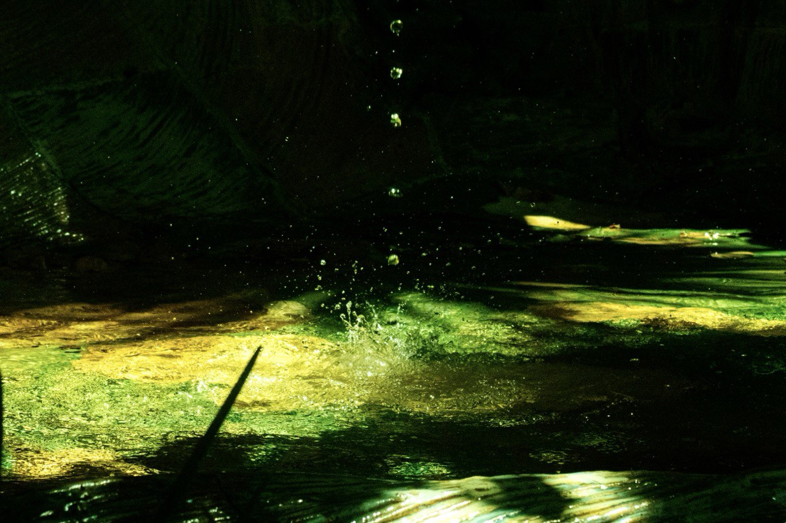
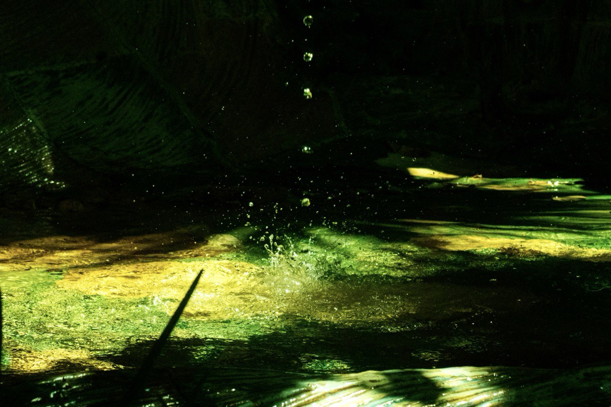
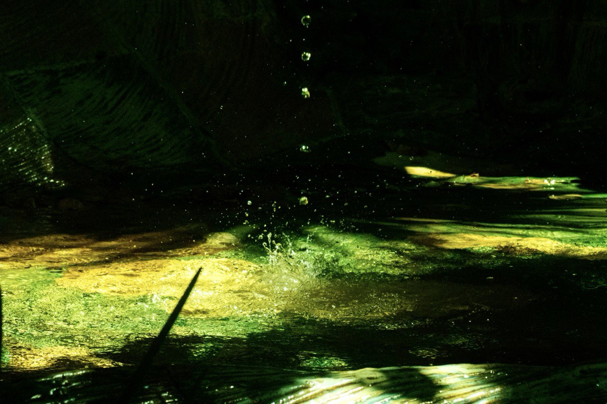

Proyectos
Fotografía

 

3D / Animación


PROYECTOS AUDIOVISUALES
Tengo 23 años y soy de Granada, ciudad que inspira mi mirada artística día a día. Me apasiona explorar narrativas audiovisuales a través de la experimentación con distintos medios y formatos, combinando imagen, sonido y creatividad. Soy graduada en Comunicación Audiovisual, y actualmente curso el Máster en Nuevos Medios y Periodismo Multimedia de la Universidad de Granada.
